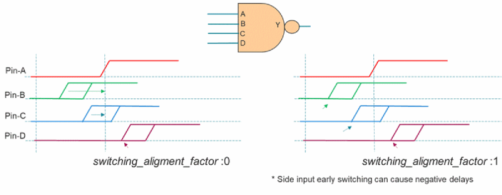
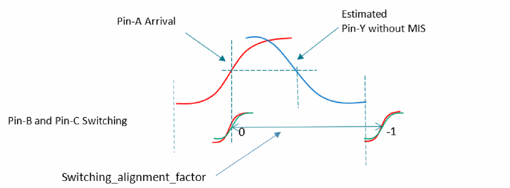
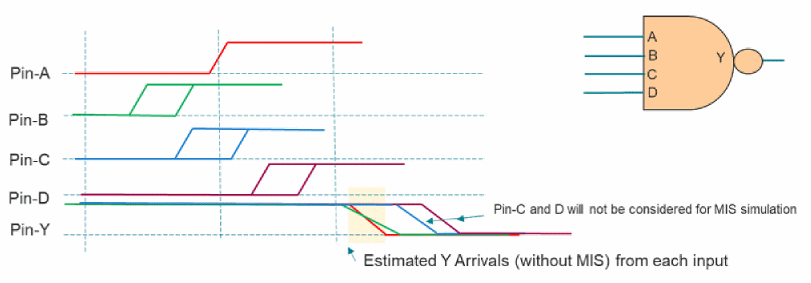

Enabling/Disabling MIS for Library Cells
When advanced MIS is enabled, Tempus recognizes the library cells that can be supported for MIS analysis. The has_mis property identifies the library cells that are considered for MIS analysis. You can query cells for the has_mis property using the get_property command or generate reports for MIS supported cells, as shown in the example given below:
foreach_in_collection each_lib_cells [get_lib_cells *] {
if {[get_property $each_lib_cells has_mis] == "true"} {
puts "[get_property $each_lib_cells hierarchical_name]
}
}
You can disable or enable MIS support for a given library cell by using the following command:
set_multi_input_switching_mode -disable_lib_cells <lib_cells collection>
set_multi_input_switching_mode -disable_lib_cells [get_libs_cell aoi*]
set_multi_input_switching_mode -disable_lib_cells [get_libs_cell lib_0.510v/aoi*]
Switching-Alignment Factor
Tempus models MIS when multiple inputs of a given instance are switching independent of each other, but in relative proximity to each other to make an impact on timing.
You can configure the relative alignment of side inputs switching with respect to the primary input to tune the impact of MIS using the following command:
set_multi_input_switching_mode -switching_alignment_factor [value between -1 to 1]
The values are described below:
- 1: Side inputs switch at the earliest arrival.
- 0: Side inputs switch at the same time as the actual input (default).
-
-1: All the side inputs switch at the same time and align at the completion of the output pin transition.
Figure -107 Switching-alignment factor values between 1 and 0

When the -switching_alignment_factor parameter value is set to 1, the side inputs switch at their earliest arrival timing. When the value is shifted towards 0, the side-input switching moves towards the primary-input arrival time. When the value is set to 0, the side inputs align with the primary input. When the factor is set between 1 and 0, the side inputs may switch much earlier than the primary input, causing the output to switch before the primary input, resulting in negative delays. The negative delays in data path are pessimistic for hold analysis. When a side input switches later than the primary input (as Pin-D in the figure above), it always uses the early-arrival time, irrespective of the -switching_alignment_factor value. This can influence output transition.
Setting the -switching_alignment_factor parameter to 1 can be very pessimistic if a side input switches much earlier than the main input. You can use the set_multi_input_switching_mode -mis_alignment_mode parameter to reduce pessimism in this mode.
Figure -108 Switching-alignment factor values between 0 and -1

When the -switching_alignment_factor parameter is set between 0 to -1, all the side inputs switch at the same time. When the value is -1, all the side inputs switch at the same time and are aligned at the completion of the output pin transition (see figure above). Since the output has already completed the transition, side-input switching has no impact on the timing of the A->Y arc. When the value moves towards 0, MIS impact will be observed. This behavior applies to both PBA and GBA.
Figure -109 Overlap alignment mode

In this mode, the side inputs that switch far from the main input are not considered for MIS. Early arrivals at the output pin caused by each input pin are evaluated to assess whether a side input should be considered for simultaneous switching or not. If estimated arrivals of a side input switch within certain vicinity of the main input, the side input is considered as SSI. Other inputs are considered as static values. The inputs considered as SSI are aligned based on the switching-alignment factor value. This mode eliminates the inputs that are switching much earlier than the main input, which may cause large negative delays.
set_multi_input_switching_mode -mis_alignment_mode {0 |1}
Library Cell Switching Alignment Factor
The switching-alignment factor can be applied for all the instances for which MIS analysis is performed. However, the Tempus software allows you to tune the MIS impact for the instances of a specific library cell. You can set the following library cell properties to override the switching-alignment factor for the instances of a specific library cell. This property can be set for rise/fall transition, which gives a more granular control on tuning the MIS impact.
set_interactive_constraint_modes [all_constraint_modes]
define_property -object_type lib_cell -type float mis_alignments_factor_min_rise \
-lower_bound -1 -upper_bound 1
define_property -object_type lib_cell -type float mis_alignment_factor_min_fall \
-lower_bound -1 -upper_bound 1
set_property [get_lib_cells ...] mis_alignments_factor_min_rise 0.5
set_property [get_lib_cells ...] mis_alignments_factor_min_fall 0.5
set_interactive_constraint_modes {}
Return to top